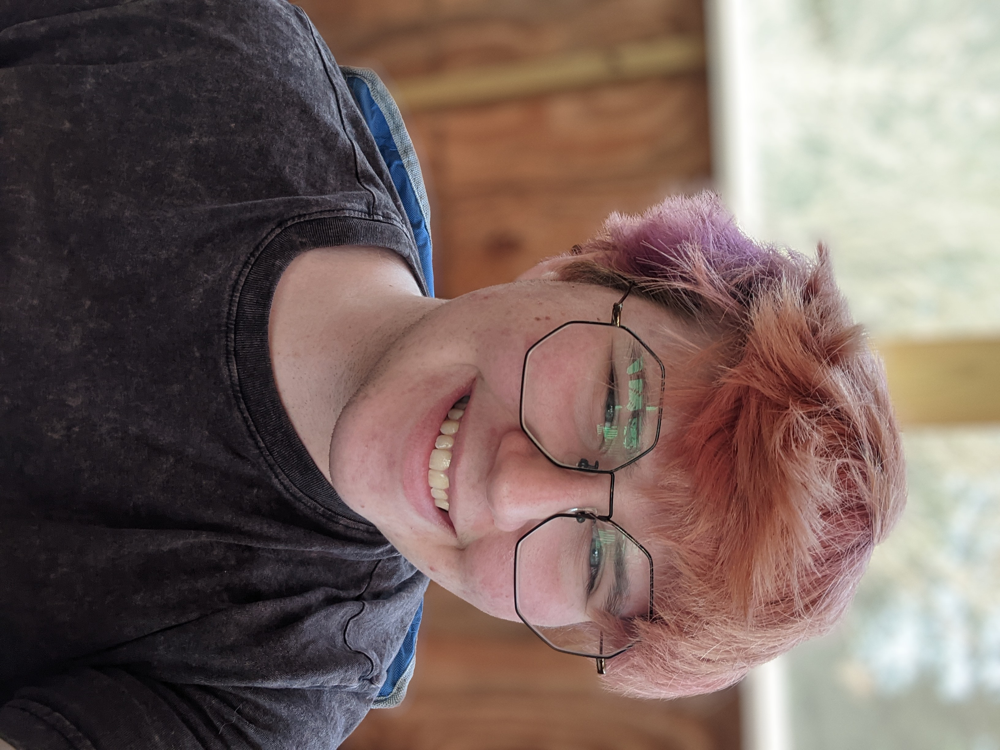
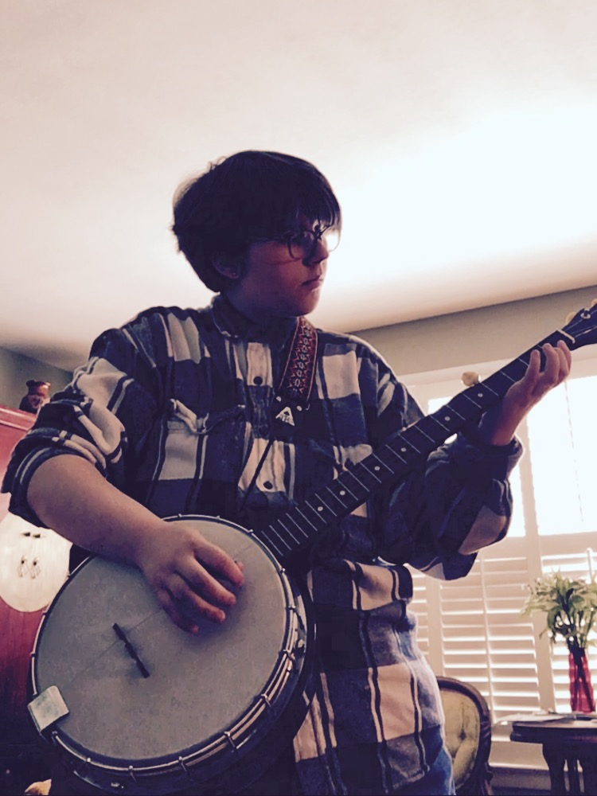
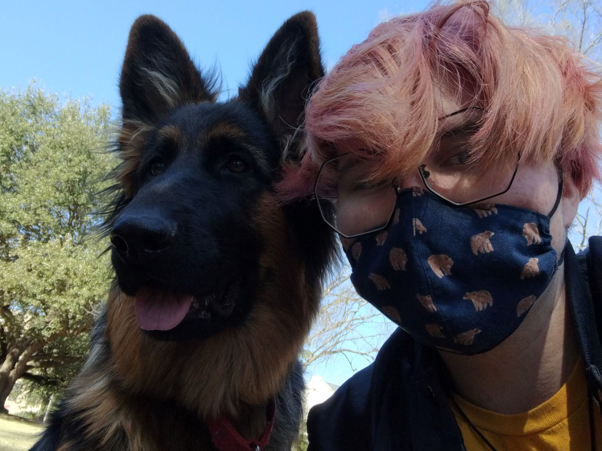
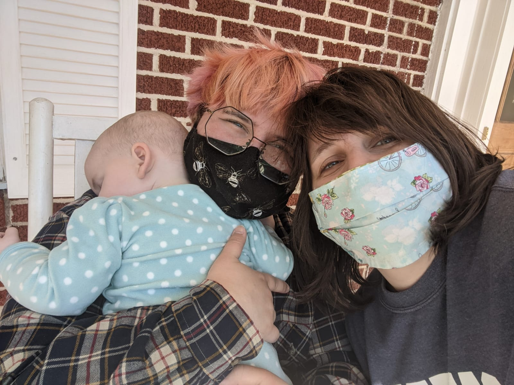
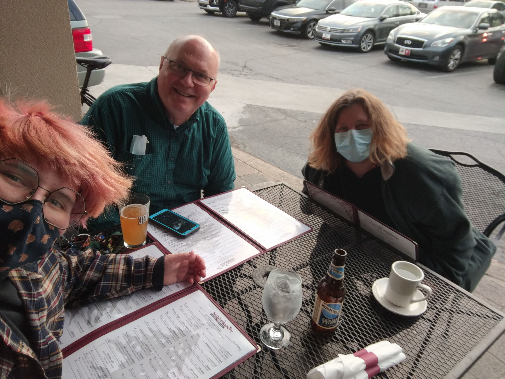

|  | My name is Casper. I am 21 years old & I use they/them pronouns. I love my girlfriend, I love dogs, I like the mountains, I love my family, and I play the banjo. My favorite animals are bears and my favorite color is yellow. In school, I'm studying Geography & Media Arts. I used to study civil engineering, but it stopped interesting me. I'm not really sure what I want to do with my life. |
A picture of me |
BanjoI started playing the banjo when I was 16 or 17 years old. I had tried to play other intruments up until that point, but I struggled to keep up with them. I decided to learn to play the banjo because of it's history. The banjo has a very fraught history, with it being played both among the oppressed and the privileged. Over time, I feel many people associate the banjo with "good ol' boys," but I feel that it is a an instrument largely of the unheard. |
 |
The OutdoorsOne of the reasons I am so fond of the banjo, is because I spend a lot of time in the areas around Asheville, NC. One of the most noteable things to do in Asheville is to hike. I have been up to Mt. Mitchell a few times, but it's rather cold and crowded. Last fall, about an hour after this picture was taken, my girlfriend, my roommate, and I went to Graveyard Fields. The leaves were changing and it was beautiful. My sister lives near Asheville, so it's very accessable to me. When it's not scorching hot, I really enjoy being outside. |
Hammockin'I've recently been spending more time in my hammock. It's so lovely to just lay in the outdoors with a blanket and some coffee, swaying in the wind. My friends found this one really nice spot on campus that's almost always empty. We often go out and put our hammocks up and listen to jazz or lofi. The hammocks are really nice for gathering outdoors and socially distanced, and we can just chill. |
 |
|  |  |  |